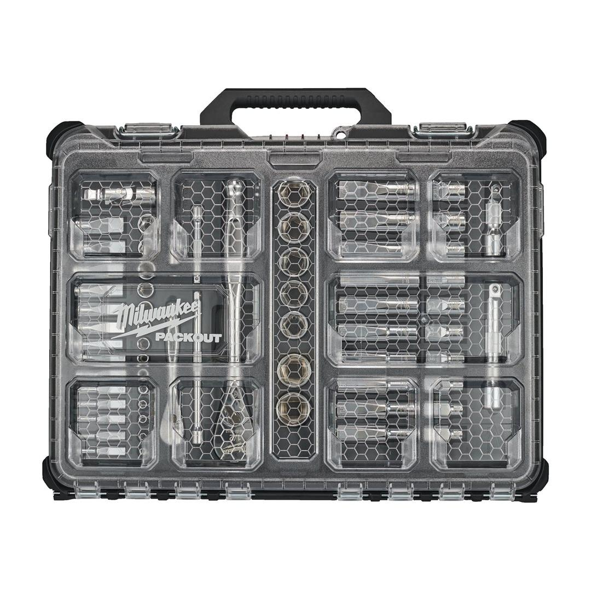
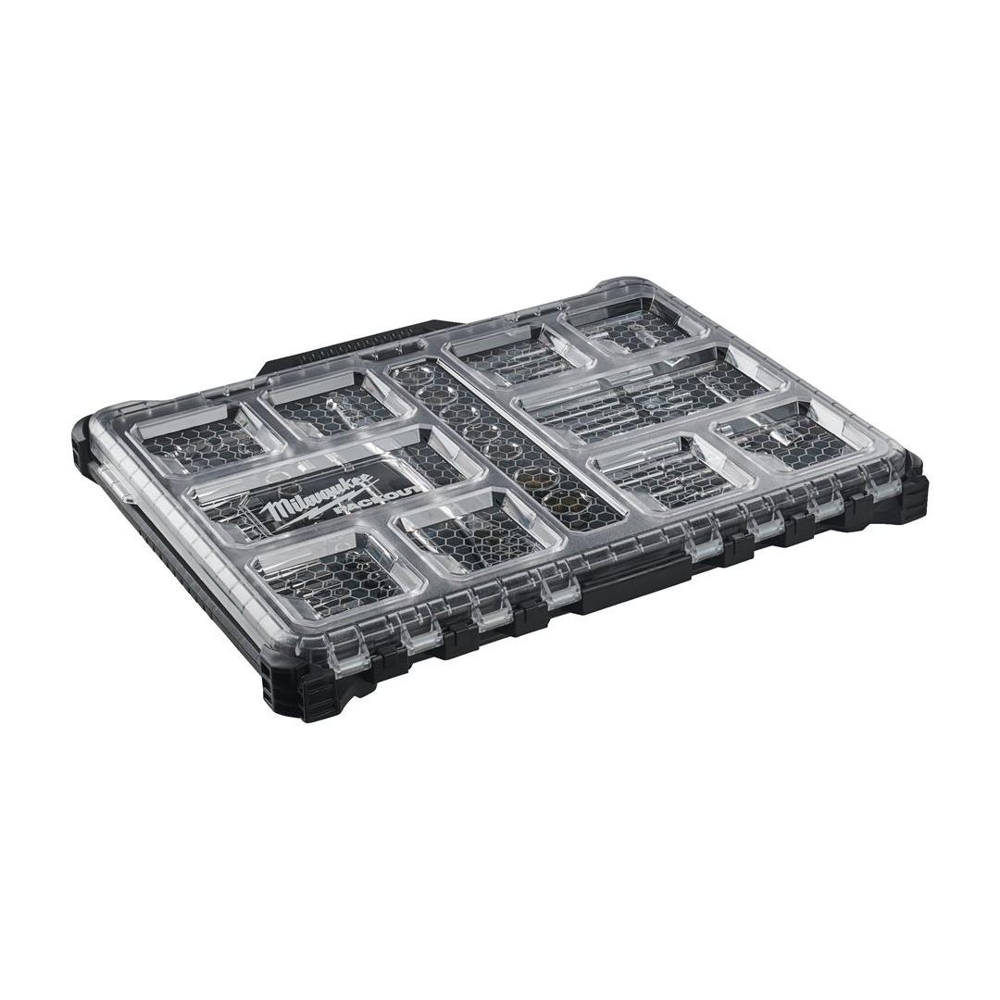
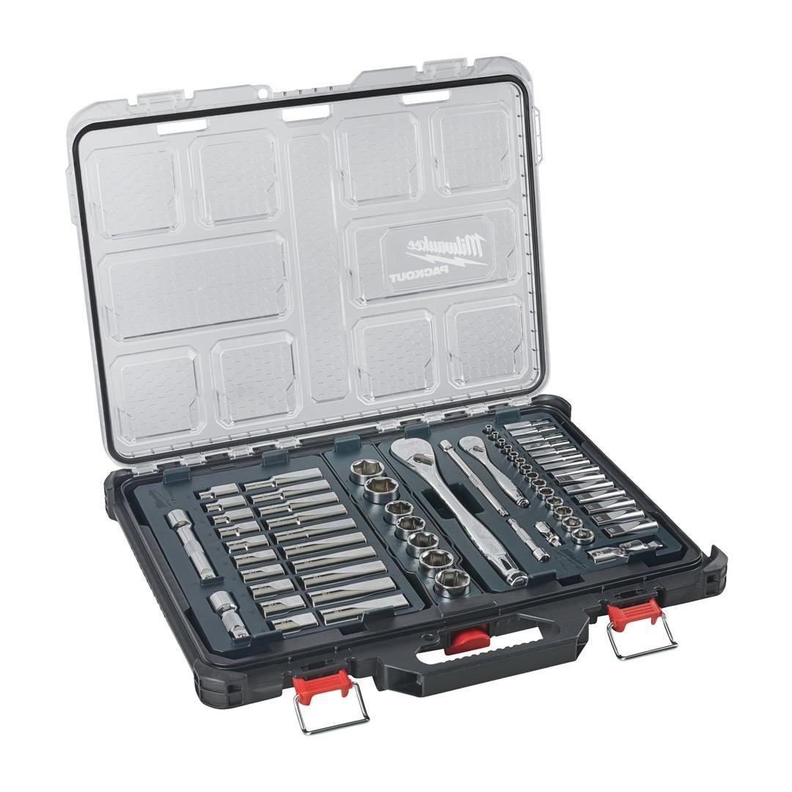

4932493661



| Contents | PACKOUT SLIM ORGANISER, 1/2" Drive Standard sockets: 10 mm, 11 mm, 12 mm, 13 mm, 14 mm, 15 mm, 16 mm, 17 mm, 18 mm, 19 mm, 20 mm, 21 mm, 22 mm, 23 mm, 24 mm, 25 mm, 26 mm / Deep sockets: 10 mm, 11 mm, 12 mm, 13 mm, 14 mm, 15 mm, 16 mm, 17 mm, 18 mm, 19 mm / 1/2" Drive 76 mm extension, 127 mm extension, 1/2 Drive Universal joint; 1/4" Drive Standard sockets: 4mm, 4.5mm, 5 mm, 5.5 mm, 6 mm, 7 mm, 8 mm, 9 mm, 10 mm, 11 mm, 12 mm, 13 mm, 14 mm, 15 mm / Deep well sockets: 4 mm, 4.5 mm, 5 mm, 5.5 mm, 6 mm, 7 mm, 8 mm, 9 mm, 10 mm, 11 mm, 12 mm, 13 mm, 14 mm, 15 mm / 1/4" Drive 76 mm extension, 152 mm extension, 1/4" Drive Universal Joint |
| Drive Type | ½″|¼″ |
| Pack quantity | 63 |
| Profile | HEX |
| Set | Single Tool | Set |